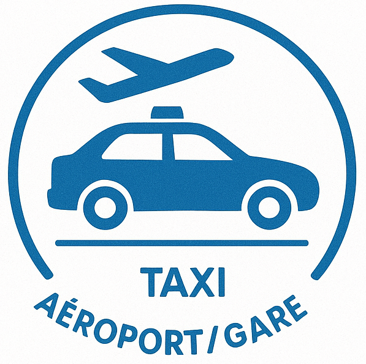
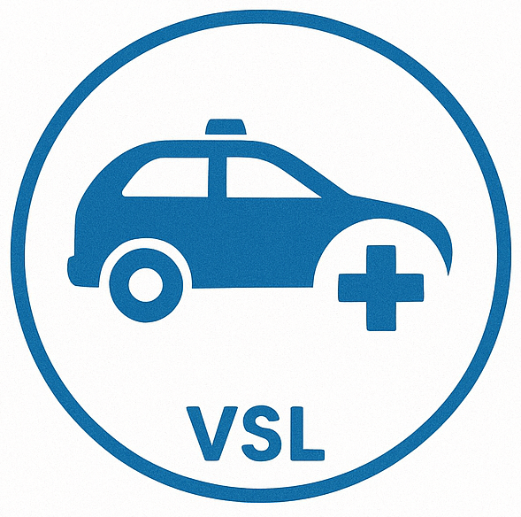

Un taxi de proximité, au service de ses habitants.
Réservez maintenant
Transfer aéroport depuis Neuville-sur-Saône, Genay, Fleurieu, Rochetaille et toutes les communes du Rhône Nord. Service 24h/24, 7j/7. Tarifs fixes, véhicules confortables. Réservation en ligne avec confirmation immédiate.

Transport médical VSL conventionné pour vos rendez-vous médicaux depuis Neuville-sur-Saône, Genay, Fleurieu-sur-Saône, Albigny, Fontaine-sur-Saône, Couzon-au-mont-d'Or. Véhicule adapté, personnel formé aux gestes de premier secours.
Transport vers les gares de Lyon depuis tout le Rhône Nord : Neuville-sur-Saône, Genay, Fleurieu, Rochetaille, Albigny, Fontaine-sur-Saône, Couzon, Poleymieu, Fontaine-saint-Martin, Cailloux-sur-Fontaine. Horaires adaptés aux trains.
Service de taxi à Neuville-sur-Saône disponible 24h/24. Transport local, transferts aéroport et gare, VSL médical.
Taxi Genay : desserte rapide depuis Neuvilles. Transport vers Lyon, aéroport Saint-Exupéry. Service VSL disponible.
Taxi Fleurieu-sur-Saône : liaison directe avec Neuvilles. Transport sanitaire VSL, transferts professionnels et personnels.
Taxi Rochetaille-sur-Saône : service de transport fiable. Spécialisé dans les trajets vers Lyon-centre et aéroport.
Taxi Albigny-sur-Saône : transport confortable et ponctuel. VSL conventionné Sécurité Sociale disponible.
Taxi Fontaine-sur-Saône : desserte quotidienne depuis notre base Neuvilles. Transport médical et traditionnel.
Taxi Couzon-au-mont-d'Or : service premium pour cette commune prestigieuse. Transport VIP et VSL médical.
Taxi Poleymieu-au-mont-d'or : accès facile depuis Neuvilles. Service adapté aux zones résidentielles du mont d'Or.
Taxi Fontaine-saint-Martin : desserte régulière de cette commune du Rhône. Transport vers Lyon et périphérie.
Taxi Cailloux-sur-Fontaine : liaison directe avec notre service basé à Neuville-sur-Saône. VSL et transport classique.
Contactez moi pour plus d'informations sur nos services de taxi dans la région.
Notre service de taxi à Neuville-sur-Saône est reconnu pour sa ponctualité, ses tarifs transparents et sa disponibilité 24h/24. Nous desservons également Genay, Fleurieu-sur-Saône, Rochetaille et tout le Rhône Nord.
Réservez facilement votre taxi Genay ou taxi Fleurieu-sur-Saône via notre formulaire en ligne, par téléphone au 07 83 61 59 26, ou par email. Service disponible 24h/24.
Nos tarifs taxi aéroport Lyon depuis Neuvilles, Genay, Fleurieu, Rochetaille sont fixes et transparents. Contactez-nous pour un devis personnalisé selon votre commune de départ.
Oui, notre service VSL dessert Albigny-sur-Saône, Fontaine-sur-Saône, Couzon-au-mont-d'Or et toutes les communes du secteur. Transport médical conventionné disponible.